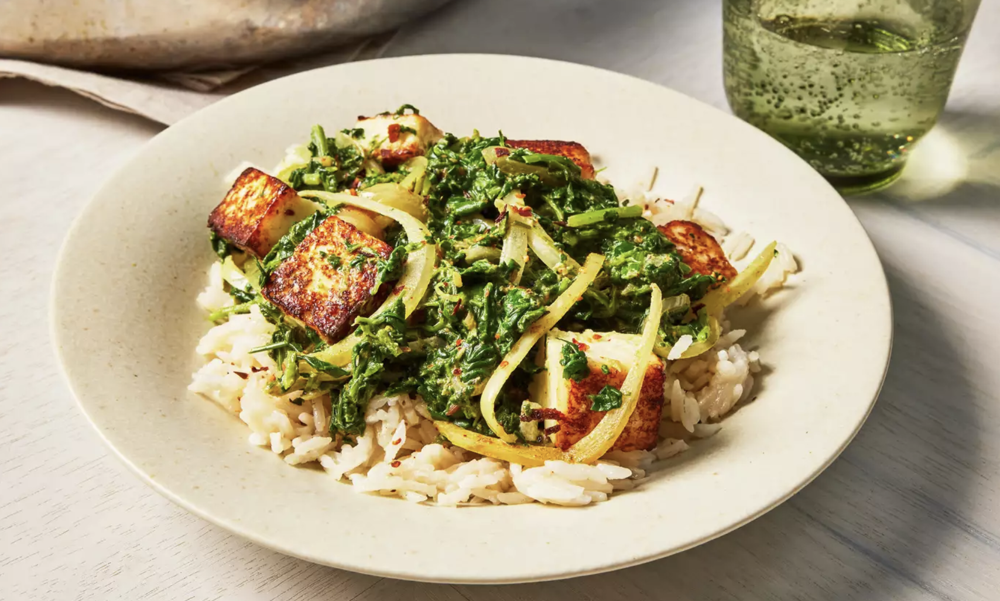

Saag Paneer

Description
Saag paneer is a classic Indian dish of cooked spinach studded with cubes of fried paneer cheese. Thickened with cream or coconut milk, it's a hearty and filling vegetarian meal.
Ingredients
- Paneer
- Spinach
- Garlic and Ginger
- Herb, Spices and Seasoning
- Whipping Cream
- Tomato
Steps
- Bring a large saucepan of water to a boil; add spinach and fenugreek and cook until wilted, about 3 minutes. Drain well.li>
- Transfer to a food processor and blend until finely chopped, about 5 pulses.
- Heat 1 tablespoon canola oil in a large skillet over medium heat; add paneer cubes and fry until browned on all sides, about 5 minutes. Transfer paneer onto a plate.
- Heat remaining 2 tablespoons canola oil in the same skillet over medium heat; add cumin seeds and fry until lightly toasted and aromatic, about 3 minutes.
- Add onion; cook and stir until softened, 4 to 5 minutes. Add garlic and ginger and stir to coat.
- Stir in tomato, garam masala, turmeric, and cayenne pepper; cook until tomato breaks down, stirring often, about 10 minutes.
- Stir in pureed spinach mixture, paneer cubes, and cream; add salt to taste.
- Reduce heat to low, cover, and simmer for 15 minutes, stirring occasionally.